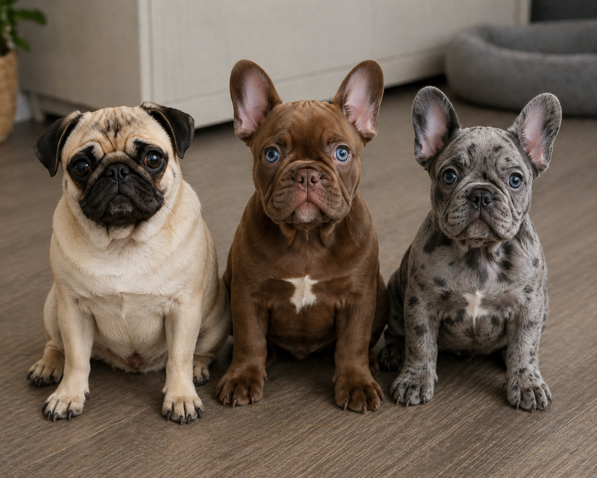
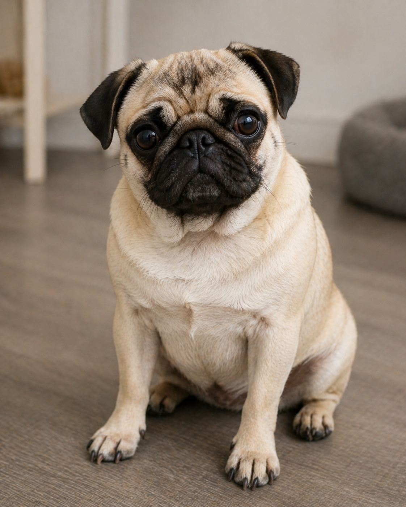
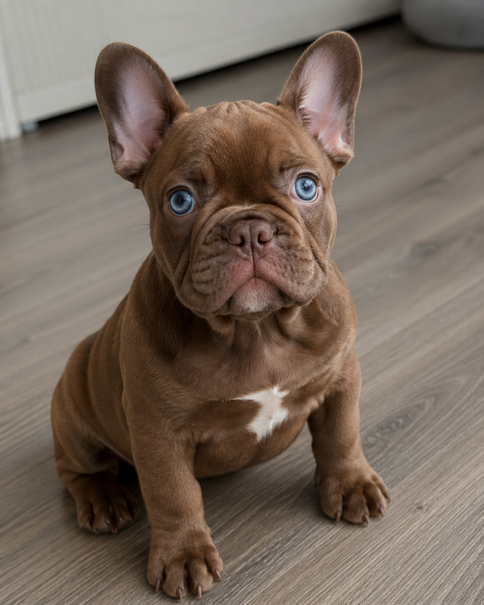
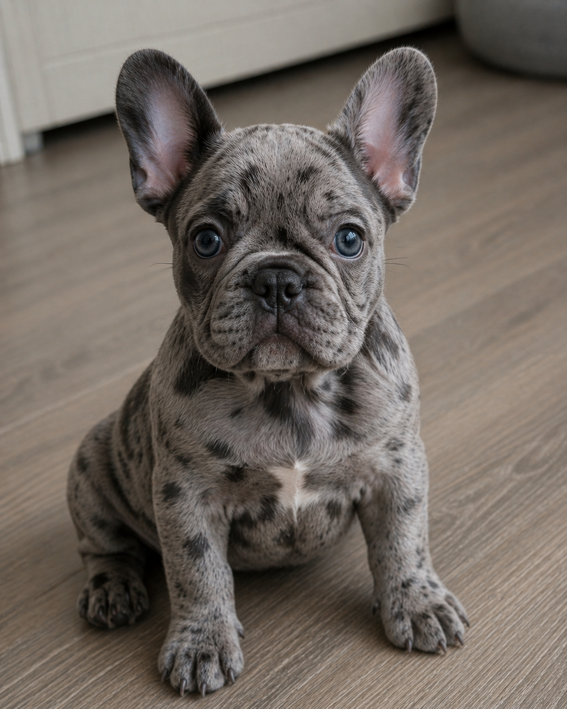

1. Pugs are a small dog breed known for their wrinkled faces and short snouts. 2. They originated in ancient China and were bred as companion dogs for royalty. 3. Pugs have a compact, sturdy body and a curled tail. 4. Their expressive eyes and charming personality make them very محبوب (lovable). 5. They are friendly, social, and usually get along well with people and other pets. 6. Pugs are known for their playful and sometimes mischievous behavior. 7. They do not require a lot of exercise but enjoy short walks and playtime. 8. Due to their flat faces, they can have breathing difficulties, especially in hot weather. 9. Pugs shed quite a bit and need regular grooming. 10. They thrive on human attention and love being part of the family.
1. Male French Bulldogs are small, muscular dogs with a compact build. 2. They are known for their distinctive bat-like ears and flat, wrinkled faces. 3. Males are often slightly larger and more robust than females. 4. They usually have a playful, energetic, and sometimes stubborn personality. 5. Male French Bulldogs tend to be very affectionate and enjoy being close to their owners. 6. They can be protective and may show territorial behavior at times. 7. Training them requires consistency, patience, and positive reinforcement. 8. Like pugs, they can have breathing issues due to their short snouts. 9. They do not need intense exercise but enjoy short walks and interactive play. 10. Male French Bulldogs are loyal companions who thrive on attention and human interaction.
1. Female French Bulldogs are small, sturdy dogs with a compact and muscular build. 2. They have the same signature bat-like ears and flat faces as males. 3. Females are often slightly smaller and lighter than male French Bulldogs. 4. They tend to be a bit calmer and more independent compared to males. 5. Female French Bulldogs are still very affectionate and enjoy bonding with their owners. 6. They can be intelligent and sometimes easier to train due to better focus. 7. Like all French Bulldogs, they may experience breathing difficulties because of their short snouts. 8. They usually get along well with children and other pets when socialized properly. 9. Grooming needs are minimal, but regular care is still important. 10. Female French Bulldogs make loyal, loving companions and adapt welll to apartment living.


